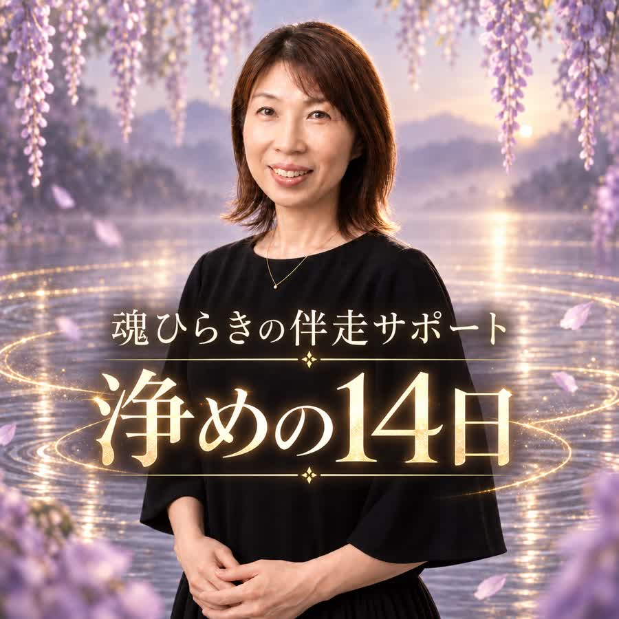
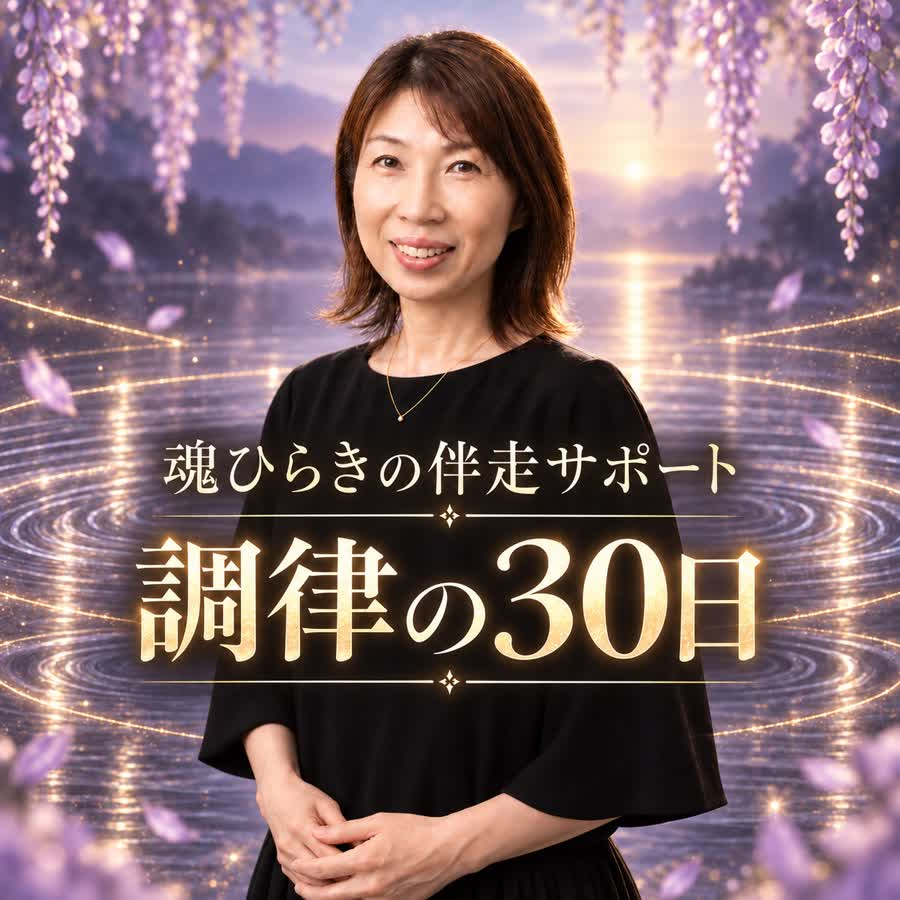
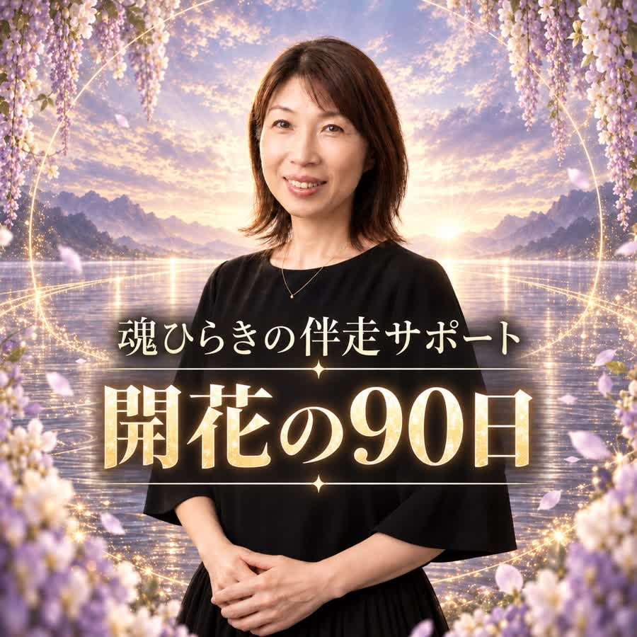

毎朝のヒーリングメッセージ
今の心の状態に合わせて、今日を整える言葉を届けるよ。読むだけの日があっても大丈夫。
鑑定で心が動いた感覚を、日常へ戻る前に育て始めてほしいから。このページを初めて開いた時から、3日間だけ申し込みを受け付けます。
AFTER THE READING
本鑑定で、自分が何を背負ってきたのか分かった。これからは、自分の気持ちを大切にしようと思えた。
でも日常へ戻ると、家族の一言に揺れたり、職場でまた我慢したり、夜になると不安が膨らんだりすることがあるよね。
それは、鑑定が届かなかったからでも、あなたの意志が弱いからでもないよ。
長く続けてきた選び方は、
分かった瞬間ではなく、
小さな選択を重ねる中で変わっていく。
これまでに向き合ってきた鑑定実績
気づきを、毎日の選び方へ。
その間を一緒に歩くのが、伴走サポートだよ。
NOT DEPENDENCE
毎日、私に答えを聞かなければ動けない。そんな状態をつくるためのサポートではありません。
揺れたときに今の気持ちをほどき、必要なら霊視で流れを確かめて、最後は自分の感覚で選べるように整えていくよ。
できなかった日があっても責めない。迷ったら、また自分のところへ戻れば大丈夫だからね。
WHAT YOU RECEIVE
今の心の状態に合わせて、今日を整える言葉を届けるよ。読むだけの日があっても大丈夫。
期間中は回数無制限。うまくまとまっていない言葉も、そのまま送ってね。
心と魂に重なった疲れを静かに整え、自分の感覚へ戻りやすい状態を支えるよ。
今の流れを視ながら、現実で何を動かすといいか、小さく具体的に伝えます。
3プランとも、お届けする内容は同じです。
違うのは、変化を一緒に見守る期間だけだよ。
THREE PLANS
れいかの一番おすすめ変化を一時的なもので終わらせたくないなら、開花の90日長く続いた選び方を、日常の中で少しずつ変えていくための王道プランだよ。

まず短い期間から試したい方へ
15,800円（税込）
背負わなくていいものを分けて、
心を軽くする14日間

揺れたあと、自分へ戻る練習を
39,800円（税込）
心と行動のずれに気づき、
自分の感覚で選ぶ30日間

迷ったら、このプランがおすすめ
99,800円（税込）
新しい選び方を習慣に変え、
自分の人生へ根づかせる90日間
THE FLOW
今の自分に合う期間を選び、商品ページで購入手続きをしてね。
決済時のお名前、購入した商品名、購入完了画面のスクリーンショットを送ってね。
最近の心の揺れや、整えたいことを伺います。まとまっていなくて大丈夫だよ。
毎朝のメッセージ、LINE相談、週1〜2回の遠隔ヒーリングをお届けします。
決済後のご連絡がない場合、購入確認ができず、サポートを開始できないことがあります。
VOICES
れいかの伴走サポートを受けた方から届いたご感想を、個人が特定されない形でご紹介します。感じ方や変化には個人差があります。
Hさん浄めの14日
本鑑定を読んだ日は「これから変われそう」と思えたのに、3日後には家族の顔色を見て、いつもの自分に戻っていました。
最初の朝に届いたのは、「今日は答えを出さなくていいよ。頼まれたことに、すぐ返事をしない練習だけしてみよう」というメッセージでした。
その日の夕方、母から急な頼みごとをされたとき、初めて「予定を確認してから連絡するね」と言えました。本当に小さなことですが、断るか引き受けるかを自分で考える時間が持てたのは初めてでした。
できなかった日も責められず、「戻ったように見える日も、気づけたなら大丈夫」と言ってもらえたことが心強かったです。
Sさん調律の30日
サポートを受ける前は、夜になると仕事やお金のことを次々に考えてしまい、LINEで相談するときも何から書けばいいのか分かりませんでした。
れいかさんは、まとまっていない文章でも一つずつ受け止めてくれて、「今感じている不安」と「まだ起きていない未来への怖さ」を分けてくれました🌿
遠隔ヒーリングの日には、胸のあたりに重なっている焦りを視てもらい、「今日は考えるのを終える時間を決めてね」と伝えてもらいました。
今も不安になる日はあります。でも、夜のうちに人生の答えを出そうとすることは減りました。翌朝に持ち越していいと思えるだけで、気持ちに少し余白ができています😊
Mさん調律の30日
最初の一週間は、LINEの文章を書いては消していました。「こんなことで連絡していいのかな」「もっと大きな悩みじゃないと迷惑かな」と考えてしまって。
思い切ってそのことを送ると、れいかさんから返ってきたのは、「相談の大きさを決めなくていいよ。言葉になる前の違和感も、一緒に見ていこうね」という言葉でした。
それからは、夫に言われて引っかかった一言や、職場で無理に笑ってしまったことも送れるようになりました。やり取りを重ねるうちに、「私は本当は嫌だった」「今日は休みたい」と、自分の気持ちに早く気づけるようになったと思います。
Rさん開花の90日
れいかさん、長い間ありがとうございました😊
最初は、そんなに長い期間が必要なのかなと思っていました。でも私は、少し楽になると「もう大丈夫」と思って、また家族を優先する生活に戻ることを何度も繰り返していたんですよね。
途中で大きく気持ちが揺れたとき、れいかさんが降ろしてくれた「変わることは、誰かを置いていくことではない」という言葉に救われました！
今は、家族に予定を聞かれる前に、自分の予定を先に手帳へ書いています。前なら罪悪感で消していたと思います。
派手な変化ではないけれど、自分で決めたことを自分で守れるようになったことが、私には一番大きな変化です。これから迷う日が来ても、前より自分のところへ戻れそうです✨
サポートお願いして本当によかったです！
Yさん浄めの14日
れいかさん、少しだけ変化があったのでご報告です😍
今日、以前立て替えていたお金が返ってきて、思いがけず8,000円ほど入りました。すっかり忘れていたので、連絡を見たときは本当に驚きました✨
金額としては大きくないかもしれません。でも、サポートが始まる前は残高を見ることさえ怖くて、「どうせまた減る」とばかり考えていたんです😣
毎朝のメッセージを読みながら、入ってきたものも、出ていくものも一つずつ確認するようになっていました。今回のお金も、前の私なら不安の中でそのまま使っていたと思います。
今回は必要な支払いに一部を回して、少しだけ手元に残しました。臨時収入もうれしかったですが、落ち着いて受け取れた自分の変化もうれしくて、れいかさんに一番に伝えたくなりました😊いつもありがとうございます😭
BEFORE YOU APPLY
生活に必要なお金を削らなければ申し込めない方。
れいかにすべての判断を委ねたい方。
すぐに結果が出ることや、望む未来の保証を求めている方。
医療・法律・投資など、専門家の判断が必要な答えを求めている方。
今回は見送ってね。
このサポートは、誰かに人生を決めてもらう場所ではなく、自分で選ぶ感覚を育てる時間だからね。
QUESTIONS
基本的には、本鑑定を受け取った方へ向けたサポートです。鑑定で視えた内容を土台にすることで、日々の変化をより具体的に見守れるからだよ。
毎朝のヒーリングメッセージ、LINE相談、週1〜2回の遠隔ヒーリング、必要に応じた霊視と行動のヒントは共通です。違うのはサポート期間です。
期間中は回数無制限です。すぐに答えられない時間帯もあるけれど、届いた内容を順番に確認して返します。
返信できない日があっても大丈夫。毎朝のメッセージを読むだけの日や、静かに過ごす日があっていいよ。
週1〜2回を目安に行います。受け取り方には個人差があり、変化や結果を保証するものではありません。
状況に応じて、終了後に別の期間へ申し込むことはできます。無理に継続を勧めることはありません。
このページからの申し込み受付は、初回閲覧から3日間です。期限後もサポートを希望する場合は、公式LINEで今の状態を聞かせてね。
FROM REIKA
変わりたいと思ったのに、また元へ戻ってしまった。
そんな日は、自分を責めたくなるよね。
でも、戻ったように見える日も、前とは違う場所にいるよ。気づけたことも、誰かに話せたことも、もう変化の一部だから。
ひとりで完璧に進まなくて大丈夫。
揺れたら一緒に整えて、また自分の歩幅で進もうね。
霊媒師 れいか
三つの期間から選ぶ14日 / 30日 / 90日・提供内容は共通です